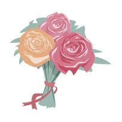

TODO TIPO DE FLORES
BIENVENIDOS A JARDILAND EXPERTOS EN JARDINERIA. La jardinería es el arte y la práctica de cultivar los jardines. Consiste en cultivar, tanto en un espacio abierto como cerrado, flores (arriates), árboles, hortalizas, o verduras (huertos), ya sea por estética, por gusto o para la alimentación, y en cuya consecución el objetivo económico es algo secundario. 
Descuentos del 15% en compras superiores a 300€